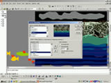
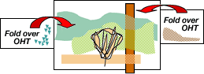
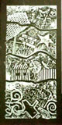
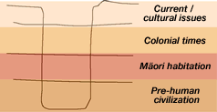

Level 5: Layers in Time
PLANNING AND ASSESSMENT
Throughout the unit or lesson, teachers should be conferencing both individuals and groups of students whilst encouraging them to respond to and reflect on their own work and the work of others by:
- reinforcing their knowledge of basic elements and principles;
- focusing on specific principles using images and artists work for reference.
The following elements and principles will be the focus for discussion in this learning example. Their use can be studied in artists' works first.
Elements
The investigation of the site involves the study of the land, its physical appearance (topography), underlying geological structure, and the evidence of plant, animal and human habitation, current and historical.
Space – analyse the structure of the landscape and identify the spatial
layers that exist (vertically and horizontally).
Colour – observe how colour changes as components recede into the distance
(aerial perspective).
Texture – experiment with a range of mark-making techniques to reflect the natural textures found at the site.
Principles
Composition – this learning experience will involve learning about the layering devices used by contemporary artists to break up the picture plane.
- Balance, harmony, unity, repetition and tension, as part of composition
- Contrast – of scale, colour, shape, tone, detail, etc
More information on art elements, see:
http://www.cyberschool.k12.or.us/~wallace/
http://www.artlex.com
Possible starting points
Teacher provides visual resources to stimulate interest – reproductions of art works, maps, books, photographs etc.
Student activities
- Discuss approaches to depicting landscape throughout the history of New Zealand.
- Brainstorm in groups, historical, cultural, social references as they apply to different time periods. Consider pre-colonisation, Māori habitation, colonial immigration, and current bi-cultural, multi-cultural and social contexts.
- Investigate a chosen site (school, neighbourhood, geographical location etc) from a physical and a historical perspective. Research and collate relevant information.
- Be an archaeologist – analyse a real or imagined core sample taken from the site. Identify objects and artifacts that might be found in the soil/strata layers. What evidence would remain in the soil of pre-habitation, early Māori, early colonial settlement?
- Discover the Māori names and symbols for objects found. Research early Māori presence in the area. Note down legends, actual historical events.
- What current social or cultural issues have shaped the chosen site?
- Discuss the significance of the land in relation to Māori culture, the early colonists, contemporary culture. How has the attitude to land changed?
- Consider the use of time-based techniques and processes in art making and brainstorm their application to this art experience.
Teacher will need to provide appropriate training in digital techniques – use of photocopier, digital camera, scanner, computer software.
[Back To Top]
Teaching notes
Oral histories of the Māori
Māori lineage, legend, and relationships with the land differ in different regions throughout New Zealand. Oral histories are those that are handed down through the generations by work of mouth. Some early colonial attempts to record Māori life exist in paintings and photographs. Many depicted a romantic view of the "Noble Savage". Some photographers at the time recorded life on the marae. More accurate records of Māori history come from the oral tradition and ancestral carvings.
Topographical landscape paintings
The first New Zealand landscape paintings and drawings were a documentary record of the topography of the land and of the effects the early European settlers had on the land. Among the first landscape painters were those surveyors (some who had not trained as artists) who used their artistic skills to draw and paint landscapes to augment their survey data. Watercolour and pencil were the most suitable media for those works that were done while the artist/surveyor was traveling.
Some typical features of topographical landscape paintings:
- the detail of vegetation and land features,
- record of Māori and settler activities on the land.
Contemporary landscape painting approaches
Many artists who work with landscape use strong compositional structures as the framework for their paintings. For example, William Sutton uses horizontal and diagonal lines based on the land structure, Shane Cotton combines the land and its history or significance in a grid structure, Nicky Forman works with sequential grids as she journeys through the New Zealand countryside.
Contemporary Māori artists
Artists such as Diane Prince, Para Matchitt, Michael Parekowhai, and Robert Jahnke interpret traditional Māori imagery and ideas as contemporary symbols.
Possible learning approaches
Artist studies
In class discussion, students could look at the way different artists, for example, William Sutton, Shane Cotton, Nicky Forman, and John Bevan Ford, use a grid structure to describe the physical and historical character of the landscape. They should consider the intention of the artist in the context of the artwork, and compare the mark-making approaches of different artists in response to the colour, texture, lines, and shapes of the land they depict.
Instructions to students
Investigate a chosen site (school, neighbourhood, geographical location etc) from a physical and a historical perspective. Research and collate relevant information representative of four time periods in the history of the site – pre-human, early Māori, colonial, and the present social/cultural mix.
Layers in Time: A Visual Mindmap
Students will combine observation work and research information in a time-based sequence that illustrates the chronological transition of the land (physical and historical) from pre-habitation times to the present, using PowerPoint.
(PowerPoint is a Microsoft presentation programme, which allows the building of multi-layered slides, which can be presented as an animated sequence.)
- Plan a storyboard to sequentially convey the four phases of information.
- Set up a series of 4 to 6 blank slides and build layers on each with imported images (photos, artwork, digital drawings, and text) to create a visual narrative about each of the time periods and their relationship with the site.
Computer software (e.g., CorelDraw, Photoshop, Painter, Paint Shop Pro, Photo Deluxe etc) can be used to create or manipulate images and to export them in JPEG format to a specified file.
- Scan images from traditional art-making processes and use them to create images and symbols. Save these or export as JPEG files.
- Use a digital camera to photograph objects, artifacts, artwork, collaged images, historical information etc. for insertion into the PowerPoint slides.
- Apply the compositional ideas of an artist selected from research to the design of the slides.
- 
Use PowerPoint custom animation tools to organise the style and entry of each image, sound effects, placement, transparency, action etc.
- Present the resulting composite work on a computer screen, or using a data projector. Sound effects or oral commentary can be added.
- This could be either an individual or group effort.
OHT interactive presentation
An overhead projector is suitable for presenting time-based activities that combine media based art and performance art.
A series of OHTs can be created using layers of images, objects, painted effects, collages, text, etc. The images will need to be scanned or photocopied, in black and white or colour, onto transparent sheets. Silhouette shapes, coloured cellophane layers, wire/ string layers etc can be used in addition, to represent aspects of the narrative. Sections or flaps can be attached to the edges of the base OHT like wings that fold over in sequence as appropriate. Each component represents a different time period. Students could use the idea of weaving as a means of inter-linking the elements of time for example, the work of Diane Prince. This could be an individual or group effort.

Pop-up 2D and 3D constructions
Create an interactive pop-up artwork that conveys information about the site. This could be in the form of a pop-up book with a series of 3-dimensional images and movable sections on a group of pages or, as a relief sculpture.
Students should explore a range of interactive techniques used in pop-up construction such as folding, sliding, concealing, revolving, pull out techniques, and appropriate materials for applying them.
Resources: pop-up books, innovative package design, and viewer-activated sculpture.
Collagraph prints

As an alternative to a time-based activity, a multi-block collagraph process could effectively convey the idea of layers in time.
Using the idea of the archeological dig and a core sample of the earth from the selected site, construct a series of time-related compositions, one for each of the four time periods previously researched.
Experiment with ways of relating the compositions to one another by using interpenetrating shapes where layers meet. Some elements of the four component compositions may now need to be adjusted and refined so they relate effectively as a single new composition.
Construct printing blocks using selected materials to create textural qualities that reflect the characteristics of each time period.
The collagraph plates could be combined with other printmaking methods – drypoint for representative detail, mono printing for mark-making and tonal variation, bamboo prints for texture, lino or wood blocks for contrast etc.

Note: The artwork illustrated is based on a different set of time zones, to those in the unit and the diagram above. These are Māori, colonial, school site, the future.
Materials
Base
Firm card with a coating of gesso or pva glue, for building up a surface into which textured items can be pressed.
Textures
Fabric, corrugated cardboard, lace, weaving, flax, leaves, shells, wood grain, etc. (When pressed into the wet gesso or PVA, these will create an indented area suitable for printing.)
Layers of paper and tissue produce fine edges/ lines.
Textures can also be build up on top of the surface but they should protrude no more than 2mm high.
Sealing layer
The completed collagraph block should be coated with shellac or polyurethane, to seal and harden the surface, in order to prevent it from breaking up during successive printings.
Assessment
Possible specific learning outcomes include:
Students will be able to:
- describe and evaluate how different styles and techniques are used to communicate the significance of specific landscape sites, in their own works and those of artists studied (CI).
- use digital and multi media processes and materials effectively in series of works (PK).
- develop, adapt and refine their ideas to create a time-based artwork using digital software and a variety of interactive processes (PK).
- generate, develop, and refine a series of interactive compositions based on their study of the physical and historical relationships of a specific site and the work of artist models (DI).
- investigate the nature and significance of a site for the different social and historical inhabitants (UC).
[Back To Top]
|